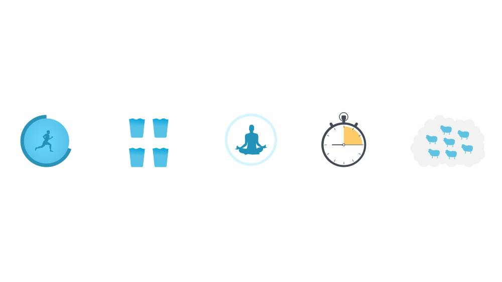

Discover about health and wellness on our weekly articles!
Healthy Eating
The Power of Healthy Eating: How to Fuel Your Body and Mind Healthy
eating is one of the most important things you can do for your body
and mind. The foods you eat have a direct impact on your energy
levels, mood, and overall health. In this article, we’ll take a
closer look at the benefits of healthy eating and offer tips on how
to make it a regular part of your life. Benefits of Healthy Eating
Improved Energy Levels: Eating a diet rich in whole foods such as
fruits, vegetables, whole grains, and lean proteins can help improve
your energy levels and reduce fatigue. Better Digestive Health:
Eating a variety of fiber-rich foods can help improve your digestive
health, reducing the risk of constipation and other gastrointestinal
issues. Reduced Risk of Chronic Diseases: A healthy diet can help
reduce the risk of chronic diseases such as heart disease, type 2
diabetes, and certain types of cancer. Improved Mental Health: The
foods you eat can also have an impact on your mental health, with
studies linking healthy diets to reduced rates of depression and
anxiety.
Exercise
The Importance of Exercise for Physical and Mental Health Exercise
is an essential aspect of a healthy lifestyle. Regular physical
activity has numerous benefits for both physical and mental health,
and can help prevent a variety of chronic diseases. In this article,
we'll explore some of the key benefits of exercise and discuss how
to incorporate it into your daily routine. Physical Benefits of
Exercise Weight Management: Exercise helps burn calories, which can
lead to weight loss or weight management. Stronger Bones and
Muscles: Regular exercise can increase bone density and muscle
strength, reducing the risk of osteoporosis and other age-related
conditions. Improved Cardiovascular Health: Exercise can improve
blood circulation, lower blood pressure, and reduce the risk of
heart disease. Better Sleep: Regular exercise can improve the
quality of sleep, helping you feel more rested and energized.
Reduced Risk of Chronic Diseases: Exercise can lower the risk of
chronic diseases such as type 2 diabetes, stroke, and some cancers.
Mental Health Benefits of Exercise Reduced Stress and Anxiety:
Exercise has been shown to reduce stress and anxiety levels, leading
to improved mental health and wellbeing. Improved Mood: Exercise
releases endorphins, which can boost mood and reduce feelings of
depression. Better Cognitive Function: Regular exercise can improve
memory, attention, and other cognitive functions, leading to better
overall brain health. Increased Self-Esteem: Regular exercise can
improve self-esteem and confidence, leading to a more positive
self-image. Incorporating Exercise into Your Daily Routine

Balance
Living a balanced lifestyle is essential to maintain good physical,
mental, and emotional health. A balanced lifestyle comprises various
aspects such as healthy eating, regular exercise, quality sleep,
stress management, and social connections. In this article, we will
discuss the importance of each of these aspects and how to
incorporate them into our daily routine to lead a healthy and
fulfilling life.